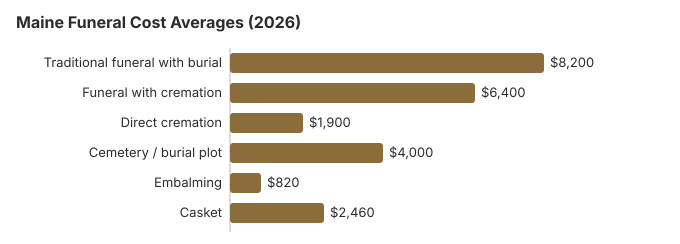

Funeral Costs in Maine: What Families Pay in 2026
Three in four Maine deaths (75%) now end in cremation, and our 2026 estimates put direct cremation near $1,900 and a cremation with a service near $6,400. A traditional Maine funeral with burial averages about $8,200, close to the $8,300 national median, before a plot near $4,000. Maine has some rules most states lack: a 48-hour wait before cremation, a $30 disposition permit, and burial help paid by the town or city rather than the county. All of that is covered below, along with the $15 Maine death certificate.
Maine Funeral Costs, Item by Item
Our Maine estimates by item. The Board of Funeral Service licenses Maine homes; each one sets its own prices.
| Item | Maine average | Range seen |
|---|---|---|
| Traditional funeral with burial | $8,200 | $6,150 – $10,660 |
| Funeral with cremation | $6,400 | $5,120 – $8,320 |
| Direct cremation | $1,900 | $1,330 – $2,660 |
| Cemetery / burial plot | $4,000 | $2,000 – $8,000 |
| Embalming | $820 | $500 – $1,500 |
| Casket | $2,460 | $820 – $6,560 |
How the Maine numbers were made: statewide estimates from our model, not prices gathered from Maine funeral homes, and not a quote or professional advice. More in the method notes and disclaimer.
State sources: 22 M.R.S. § 4313; Maine GA Appendix H (10/1/26–9/30/27).

Maine Rules That Change the Bill
Three Maine rules shape the timetable and the bill. A cremation cannot happen until 48 hours after death (32 M.R.S. § 1405), which affects how long the funeral home must hold the body and whether it charges for refrigeration. Every burial or cremation needs a disposition permit that costs $30, and $5 of that goes to the state Cemetery Preservation Commission (13 M.R.S. § 1374). And public help comes from the town or city general assistance office, not the county, with caps of $1,620 for a burial and $1,125 for a cremation through September 30, 2027.
Help With a Maine Funeral Bill
- Maine's general assistance pays only when no legally liable relative can, so the town administrator will ask about close family first.
- Even when the Maine funeral home has reported the death, Social Security's $255 reaches a spouse or child only if they apply, at 1-800-772-1213, before two years pass.
- Paid for a Maine veteran's funeral? A claim on VA Form 21P-530EZ can return as much as $1,032 for the burial and $1,032 for the plot if the death, on or after October 1, 2026, was not service-related. Details: veteran burial benefits guide.
- Maine families can find Medicaid and charity options in the funeral payment assistance guide, and our how to pay for a funeral with no money page lists every low-cost route.
Educational Resources
- Funeral Consumers AllianceIndependent nonprofit consumer advocacy for funeral rights
- FTC Funeral RuleThe federal rule protecting funeral consumers
- Funeral Insurance GuideCompare final expense and burial insurance options
- Best Burial Insurance CompaniesSide-by-side comparison of top burial insurance providers
- Payment Assistance GuideGovernment programs and financial help for funeral costs
- Insurance Plan ComparisonCompare coverage, premiums, and payout speed across providers
Compare Funeral Costs
- Average Funeral Cost in 2026National cost breakdown with real prices
- Cremation vs. Burial Cost ComparisonSide-by-side price comparison to help you decide
- Funeral Cost BreakdownEvery line item explained: know what you're paying for
- Cheapest Funeral OptionsLower-cost alternatives, with typical price ranges
- Direct Cremation: Most Affordable OptionNFDA 2023 median $2,645 with a family-supplied container (latest available)
- How to Compare Funeral PricesStep-by-step guide to getting the best price
Maine Prices by City
Portland, Lewiston, Bangor and rural Maine all price differently. City estimates:
Maine Funeral Buyers' Rights
If you believe a funeral home in Maine has violated these rights, you can file a complaint with the FTC at ftc.gov or contact the Funeral Consumers Alliance for guidance. Board staff take questions and complaints at (207) 624-8624; the board asks the public not to contact board members directly.
Maine Cremation and Burial Guides
Maine cremation and burial in more depth:
Cremation Costs in Maine
Cremation is now the norm in Maine (75%). Direct cremation from about $1,900, with a service from $6,400, plus urns and scattering.
Burial Costs in Maine
Plots from $4,000 and the casket, vault, headstone and opening costs that bring a Maine burial to $18,760-$23,260.
Maine Charges to Watch
Maine quotes often grow after the first call. Ask about:
- An embalming charge described as mandatory; Maine law seldom requires it.
Lower-Cost Maine Funerals
| Option | Maine cost | What it includes |
|---|---|---|
| Direct cremation | $1,900 | Cremation with no viewing or service; Maine requires a 48-hour wait first (32 M.R.S. § 1405). |
| Direct burial | $4,100 | Burial without embalming or viewing; Maine cemeteries add their plot and opening charges. |
| Green burial | $4,510 | Natural burial in a shroud or biodegradable casket, at a Maine cemetery that accepts it. |
| Cremation + memorial | $6,400 | Cremation, memorial service later |
| Traditional funeral | $8,200 | Viewing, funeral and burial |
What Moves Maine Prices
Northeast funerals usually cost more than the $8,300 US median, though Maine sits close to it. Homes in greater Portland often quote 10-30% above those in smaller Maine towns.
Maine Cremation or Burial
Cremation
- Direct cremation near $1,900
- Cremation and service near $6,400
- No cemetery lot
- Memorial can wait for spring
- 75% of Maine deaths
Traditional Burial
- Traditional funeral near $8,200
- Maine plot near $4,000
- An outer burial container is usually required
- A lasting grave site
- National median for a metal casket: about $2,500 (NFDA 2023 General Price List Study); Maine sellers vary
Maine Funeral Planning Steps
For a Maine funeral being arranged now, this order saves money and stress:
- Settle on burial or cremation: cremation in Maine or burial in Maine.
Maine death certificates: $15 for the first, $6 after
The Maine CDC's Data, Research and Vital Statistics office charges $15 for a search and the first certified copy of a death certificate and $6 for each extra copy ordered at the same time, so five copies cost $39 (Maine DHHS, request vital records; checked October 29, 2026). The fees are set in rule 10-146 CMR ch. 7.
- Closed records: Maine limits certified copies to people with a direct interest, such as family or the estate's representative, so bring proof of relationship.
- Walk-in: 220 Capitol Street, Augusta, 9 a.m. to 4 p.m.; copies are usually ready the same day and within 24 hours at most.
- By mail: five to seven business days; make the check payable to "Treasurer, State of Maine." VitalChek adds $15.50 to each online order.
- Veterans: Maine gives one certified copy free when it is needed for VA benefits.
Maine's board, town assistance and veterans cemeteries
Funeral directors and establishments in Maine are licensed by the Maine Board of Funeral Service. Call board staff at 207-624-8624 to check a license or make a complaint.
A Maine family does not have to hire a funeral director for after-death care; the Funeral Consumers Alliance leaves Maine off its list of nine states that require one. Even so, someone must file the death certificate and obtain the disposition permit.
Maine requires a 48-hour wait before a cremation (32 M.R.S. § 1405).
Town and city help
Burial help in Maine comes from the municipality, not the county. Under 22 M.R.S. § 4313, a town or city's general assistance program may pay the funeral director's direct costs when no legally liable relative can, up to $1,620 for a burial and $1,125 for a cremation from October 1, 2026, to September 30, 2027. (Source: 22 M.R.S. § 4313; Maine GA Appendix H (10/1/26–9/30/27).) The $255 from Social Security is for an eligible spouse or child who claims within two years, and never to the Maine funeral home.
Veterans cemeteries in Maine
For Acadia National Cemetery (508-563-7113), your Maine funeral home books through the VA's National Cemetery Scheduling Office, 800-535-1117. The state and tribal cemeteries take requests themselves: Central Maine Veterans Cemetery (207-287-3481), Northern Maine Veterans Cemetery (207-492-0577), Southern Maine Veterans Cemetery (207-490-4612) and Houlton Band of Maliseet Indians Veterans Cemetery (tribal, 207-532-4273).
Maine steps
- Ask each Maine home for its General Price List, which the FTC Funeral Rule requires it to give anyone asking in person.
- A memorial after the cremation or burial lets a family in Maine skip embalming and viewing charges.
- Talk to the town or city general assistance administrator before the funeral; it pays only the funeral director's direct costs.
- For a veteran, ask the funeral home about Acadia National Cemetery or a state veterans cemetery before buying a plot.
- If a Maine home won't show or follow its price list, tell the board: 207-624-8624.
Frequently Asked Questions
What will a Maine funeral cost in 2026?
A traditional Maine funeral averages about $8,200 on our estimate, near the $8,300 national figure. Cremation with a ceremony is about $6,400, direct cremation about $1,900, and a Maine plot adds roughly $4,000. Maine homes differ widely on all of these.
What does cremation save in Maine?
Direct cremation starts near $1,900 in Maine, and a traditional funeral with burial averages $8,200 before the plot or vault. The gap is at least $6,300, about $10,300 with the $4,000 plot.
What rights do Maine funeral buyers have?
Under the FTC Funeral Rule a Maine family gets an itemized price list and phone prices and may buy only the goods and services it wants. Maine does not make families hire a funeral director, per the Funeral Consumers Alliance. The Maine Board of Funeral Service (207-624-8624) confirms licenses and takes complaints.
How can a Maine family lower the cost?
Families who put two or three Maine price lists next to each other regularly find $1,000 or more in differences. If the death falls between December and March, ask for frozen-ground charges separately, since many Maine cemeteries add a winter fee. Town, Catholic and Jewish cemeteries in Maine usually charge $1,000 or more below private memorial parks. Direct cremation, about $1,900, is the cheapest option in the state.
Do I have to embalm a loved one in Maine?
Rarely. Under the FTC Funeral Rule, a Maine home cannot tell you the law requires embalming when it does not, and its price list has to say embalming is not required except in special cases. If a Maine home says it is needed, ask which law or cemetery rule it means.
How does Maine compare with the US average?
About the same. Maine's $8,200 traditional average is close to the $8,300 national median, although the Northeast as a whole runs higher.
What is the cheapest choice in Maine?
Direct cremation, about $1,900 in Maine: the home collects the body, cremates it and gives the family the ashes. For burial, direct burial (no viewing or ceremony) runs near $4,100 before cemetery fees and costs least.
How do I find a lower-priced Maine funeral home?
Maine homes must quote prices by phone under the FTC Funeral Rule, so a few calls go a long way. A casket or urn bought somewhere else must be accepted with no fee.